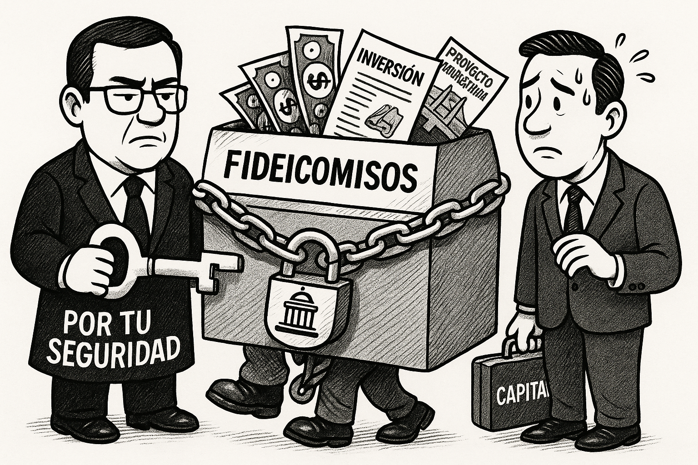
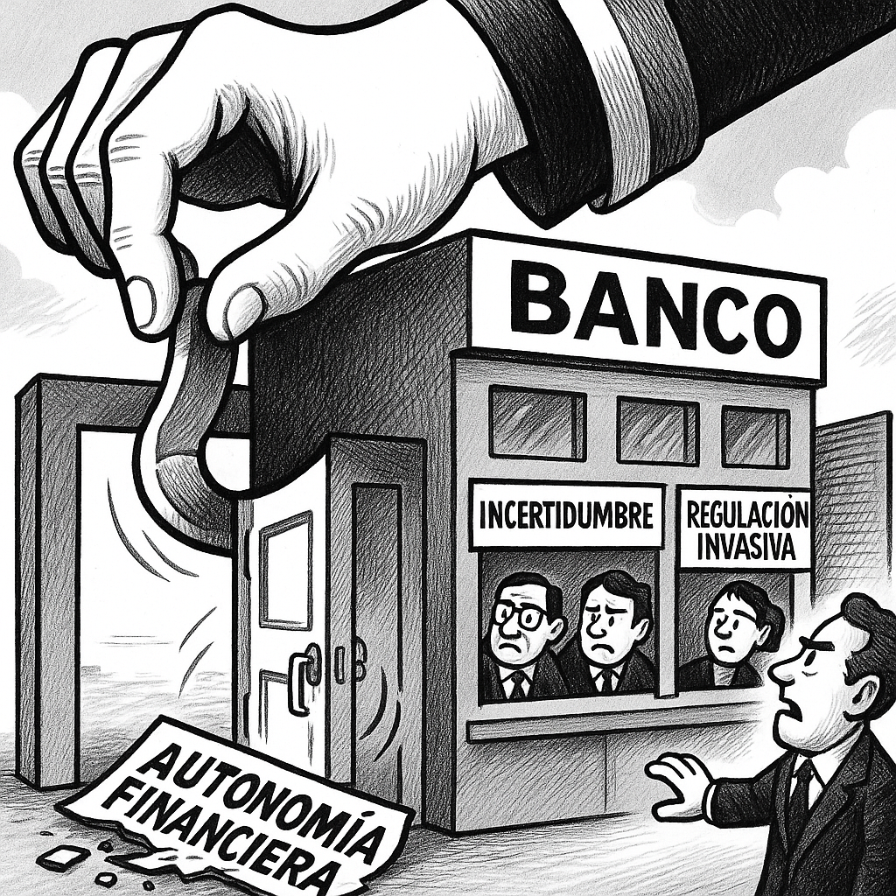

La Propuesta que Sacude los Fideicomisos y la Autonomía Financiera en México
Una iniciativa legislativa podría redefinir el equilibrio entre supervisión estatal y autonomía financiera, encendiendo alertas sobre el futuro de la inversión y la certidumbre jurídica en México.
El ecosistema financiero mexicano se encuentra ante la inminente posibilidad de una reconfiguración significativa, impulsada por una propuesta legislativa que busca no solo intensificar la regulación sobre los fideicomisos, sino también otorgar facultades de intervención sin precedentes a las autoridades sobre las instituciones financieras. Presentada bajo el estandarte de la estabilidad y la transparencia, esta iniciativa legislativa, de concretarse, podría redefinir las reglas del juego, generando un debate crucial sobre el equilibrio entre la supervisión estatal y la autonomía del sector privado.
La propuesta, cuyo detalle ha comenzado a permear en los círculos especializados, apunta a una revisión exhaustiva del marco normativo que rige los fideicomisos, instrumentos financieros ampliamente utilizados para la administración de patrimonios, inversiones y proyectos de diversa índole, tanto públicos como privados. La justificación oficial se centra en la necesidad de cerrar posibles resquicios que podrían ser utilizados para actividades ilícitas o para eludir responsabilidades fiscales, así como para fortalecer la supervisión ante escenarios de riesgo sistémico.
Sin embargo, el aspecto que genera mayor inquietud en los observadores independientes y analistas del sector es la ampliación propuesta de las facultades de intervención gubernamental sobre las propias instituciones financieras. ¿Hasta qué punto esta "mayor vigilancia" se traduce en un poder de injerencia que podría trascender la prudencia regulatoria para adentrarse en el terreno de la discrecionalidad política? La línea entre la salvaguarda del sistema y la potencial cooptación de su operación por parte del Estado se vuelve, en este contexto, peligrosamente delgada.
Interrogantes Críticos y Riesgos Potenciales:
- ¿Transparencia o Control Excesivo? Si bien la lucha contra el lavado de dinero y la evasión fiscal son objetivos loables, es imperativo cuestionar si las herramientas propuestas son proporcionales al riesgo. ¿Podrían las nuevas regulaciones sobre fideicomisos asfixiar la inversión legítima o desincentivar la innovación financiera al imponer cargas burocráticas excesivas?
- Autonomía vs. Intervencionismo: ¿Podría esta medida ser interpretada como un paso hacia una mayor centralización del control financiero por parte del Estado, potencialmente vulnerando la independencia de los mercados?
- El Factor Inversión y Capital: Un marco regulatorio percibido como excesivamente intrusivo o impredecible puede ahuyentar el capital. ¿Cómo impactaría esta ley en el atractivo de México como destino de inversión, particularmente en un entorno global de alta competencia por el capital?
- Uso Político de la Regulación: ¿Existen salvaguardas suficientes para prevenir que estas nuevas facultades sean empleadas para presionar o penalizar a entidades por motivos políticos o ideológicos, más allá de criterios técnicos y económicos?
- Competitividad del Sector: Si las regulaciones se vuelven excesivamente onerosas o las intervenciones impredecibles, ¿cómo afectaría esto la competitividad de las instituciones financieras mexicanas frente a sus pares internacionales?
La propuesta, por su magnitud y las implicaciones inherentes, exige un debate público robusto y transparente, que vaya más allá de las justificaciones superficiales. Es fundamental que legisladores, expertos, representantes del sector privado y la sociedad civil analicen meticulosamente cada artículo, sopesando los beneficios declarados contra los riesgos latentes. La estabilidad del sistema financiero no se construye solo con control, sino también con confianza, predictibilidad y el respeto irrestricto a la legalidad y la autonomía en un mercado competitivo. Ignorar estas voces críticas sería actuar con una miopía que, a la larga, podría costar caro al desarrollo económico del país.